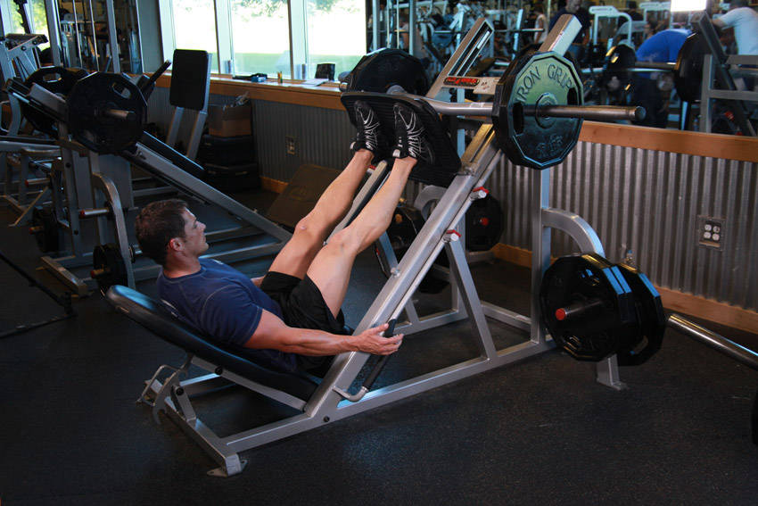
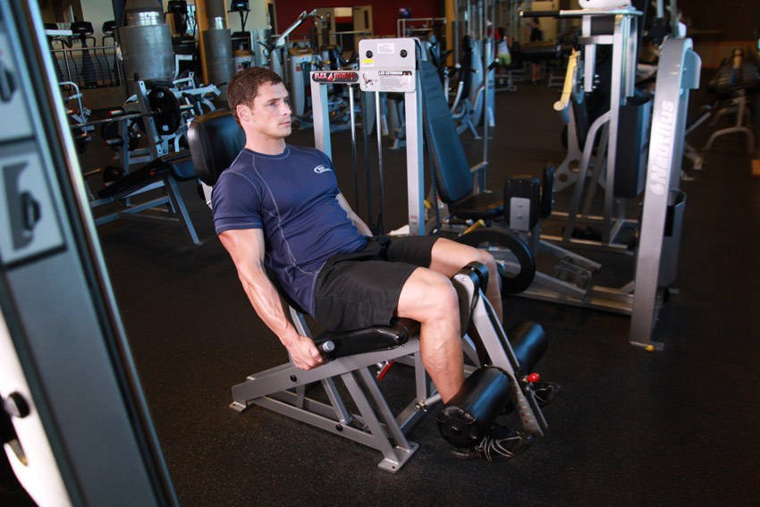
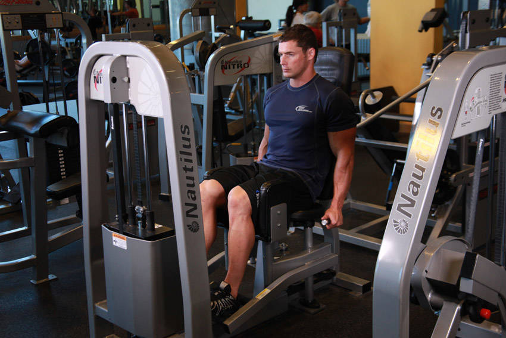
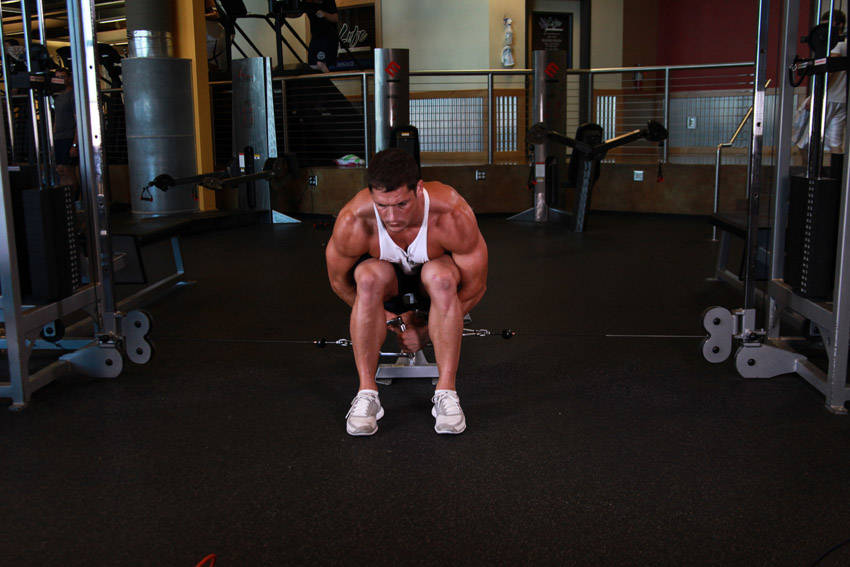
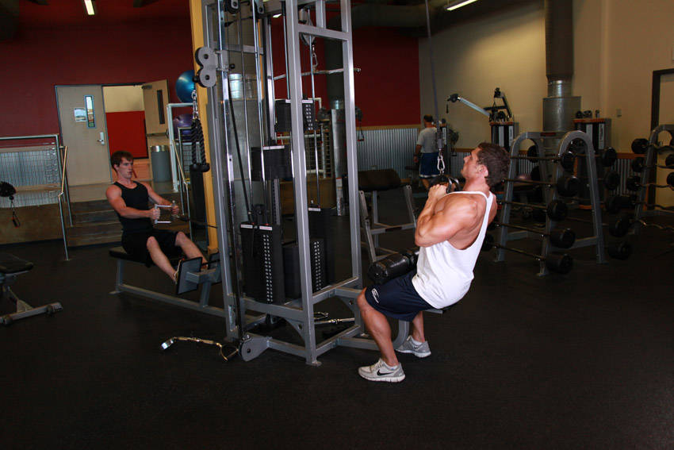
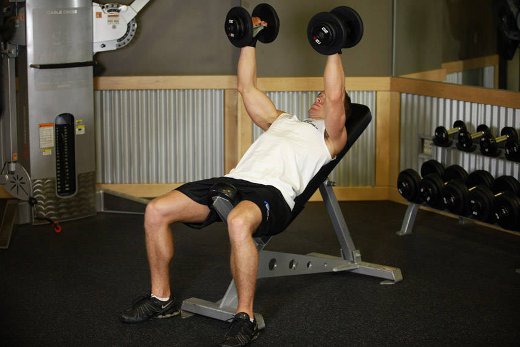
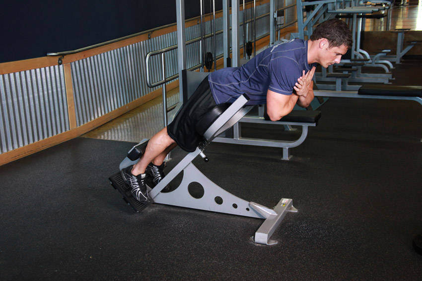
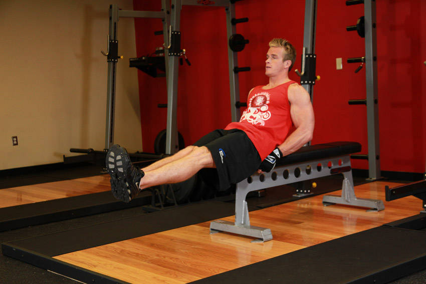

Ankle Guardrail: Set feet at top edge of platform, shoulder-width apart, toes slightly outward (10°). Never let heels lift. Push through big-toe mound. Set safety stopper pins 2 notches high to prevent anterior screw pinch.

Ankle Guardrail: Position shin roller pad 1.5–2 inches above ankle joint (away from incisions & screws). Smooth 3-second descent, no knee hyperextension.

Ankle Guardrail: Roller pad sits comfortably above heel counter (lower Achilles). Maintain ankle in soft neutral 90° dorsiflexion without pointing toes or forcing flexion.

Ankle Guardrail: Keeps knees and hips balanced to prevent foot rolling. Rest feet flat on foot pegs; keep shins neutral with zero outward roll.

Exercises at Yes Fit Gym: Cable Lateral Raises, Rope Triceps Pushdown, Face Pulls with External Rotation, Seated Cable Row, Pallof Anti-Rotation Press, Cable Y-Raises.

Ankle Guardrail: Lock thigh pad securely. Keep both feet planted flat under knees. Wednesday uses Close-Grip V-Bar; Friday uses Wide-Grip Lat Bar.

Exercises: Incline DB Press (30°), Seated DB Shoulder Press, Chest-Supported DB Row, Incline Hammer Curls, Flat DB Press. Plant left tripod foot flat on floor.

Ankle Guardrail: Secure heels flat against footplate and calves under padded rolls. Pad set right below hip crease; hinge at hips, not spine.

Ankle Guardrail: Shins must be 100% vertical at top. Drive through big-toe ball and heel. Zero ankle dorsiflexion load on healing screws.

Cardio Protocol: Treadmill walking STRICTLY at 0.0% incline (4.5–4.8 km/h). Stationary cycling at 65–75 RPM with mid-foot centered on pedal.
• Busy Equipment: If a machine is taken during peak gym hours, tap the "Gym Equipment Busy" swap button on that card for an instant free-weight/cable alternative.
• Hydration: Carry a 1-liter bottle to sip between sets to hit your 3.5L daily target.